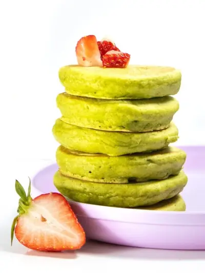

15-Minute Fluffy Spinach Pancakes (for Baby, Toddlers & Kids!)

Ingredients
- 1 cup all-purpose flour, (white wheat flour or a GF blend)
- 2 tsp baking powder
- 1 tsp cinnamon
- 1/4 tsp salt
- 1 ripe banana
- 1 cup spinach, (not packed)
- 1/2 cup milk of choice, (regular, coconut, almond, hemp, etc)
- 2 tbsp coconut oil, olive oil or melted butter
- 1 large egg
- 1 tsp vanilla extract
Steps
- Dry Ingredients: in a medium bowl, whisk together the flour, baking powder, cinnamon and salt.
- Wet Ingredients: in a blender, add the banana, spinach, milk, oil, egg and vanilla extract and blend for 45-60 seconds on medium-high speed or until all of the spinach is incorporated.
- Mix: pour the wet ingredients into the dry ingredients and gently fold until incorporated.
- Cook: Heat a non-stick pan or pancake griddle over medium to medium-low heat. Pour 2-3 tablespoons of batter onto the pan and cook for 2-3 minutes or until tiny bubbles appear on the outside of the pancake. Flip and cook for an additional 2 minutes. If batter gets too thick, add in a tablespoon at a time of milk and re-blend until you have the right consistency.
- Continue: Transfer pancakes to a cooling rack and repeat the process until you have used all of the batter.
- Serve and Enjoy!
Recipe by Baby Foode, from Baby Foode. Saved here for personal use; the original has the full notes, tips and photos. Open original